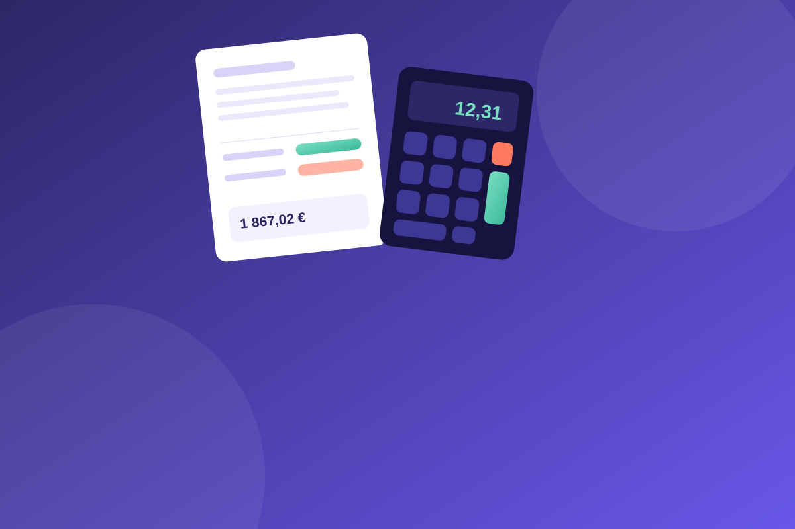

01
Choisissez un sujet
Ouvrez l’outil correspondant à votre question : salaire, contrat, congés ou temps de travail.
Salaire, indemnités, congés ou fin de contrat : utilisez des simulateurs simples pour y voir plus clair et préparer vos prochaines démarches.

Moins de flou.
Plus de repères.
Des estimations utiles pour mieux préparer vos démarches.
Choisissez un sujet ou recherchez directement un simulateur. Revenez ici à tout moment.
Estimez l’indemnité minimale liée à une rupture conventionnelle.
Lancer le calcul →Estimez le montant selon votre salaire et votre ancienneté.
Lancer le calcul →Convertissez un salaire brut en estimation de salaire net.
Lancer le calcul →Estimez le salaire brut correspondant à un montant net.
Lancer le calcul →Obtenez un premier ordre d’idée de vos allocations chômage.
Lancer le calcul →Estimez l’indemnité de fin de CDD selon les éléments saisis.
Lancer le calcul →Estimez vos droits ou l’indemnité de congés payés.
Lancer le calcul →Estimez la rémunération des heures effectuées en plus.
Lancer le calcul →Évaluez votre temps de travail à temps partiel et ses équivalences.
Lancer le calcul →Repérez les éléments utiles pour estimer la durée de votre préavis.
Lancer le calcul →Préparez une estimation des sommes à vérifier en fin de contrat.
Lancer le calcul →Montant horaire, mensuel et annuel selon votre durée de travail.
Lancer le calcul →Convertissez un taux horaire en salaire mensuel ou annuel.
Lancer le calcul →Estimez l'indemnité légale de départ ou de mise à la retraite.
Lancer le calcul →Arrêt maladie : 50 % du salaire journalier de base, plafonné
Lancer le calcul →Durée du congé et indemnités journalières de la Sécurité sociale.
Lancer le calcul →25 jours de congé (32 si naissances multiples) et indemnités.
Lancer le calcul →Indemnités journalières : 60 % puis 80 % du salaire journalier de base.
Lancer le calcul →Aucun simulateur ne correspond à cette recherche. Essayez un autre mot-clé.
Des guides pour mieux comprendre les règles du droit du travail et préparer vos démarches.
Comprenez les principaux éléments à prendre en compte pour estimer votre indemnité.
Lire le guide →Découvrez le taux habituel, les conditions de versement et les principales exceptions.
Lire le guide →Découvrez les deux méthodes de calcul et les éléments à vérifier en fin de contrat.
Lire le guide →Indemnité, préavis, chômage : le tableau pour comparer les trois façons de quitter un CDI.
Lire le guide →Les trois montants d'une fiche de paie, un exemple au SMIC et le bon montant à utiliser.
Lire le guide →Préavis, ancienneté, SJR, solde de tout compte : les définitions, avec le bon simulateur.
Ouvrir le glossaire →Voir tous les guides → · Questions fréquentes →
Nouveau : modèles de lettres · parcours selon votre situation · exemples chiffrés · simulateur accident du travail
Les simulateurs vous aident à mieux comprendre une situation avant d’aller plus loin.
Ouvrez l’outil correspondant à votre question : salaire, contrat, congés ou temps de travail.
Complétez les champs demandés avec les éléments dont vous disposez.
Utilisez le résultat comme point de départ et vérifiez les règles applicables à votre cas.
Choisissez un simulateur et obtenez rapidement un premier repère.